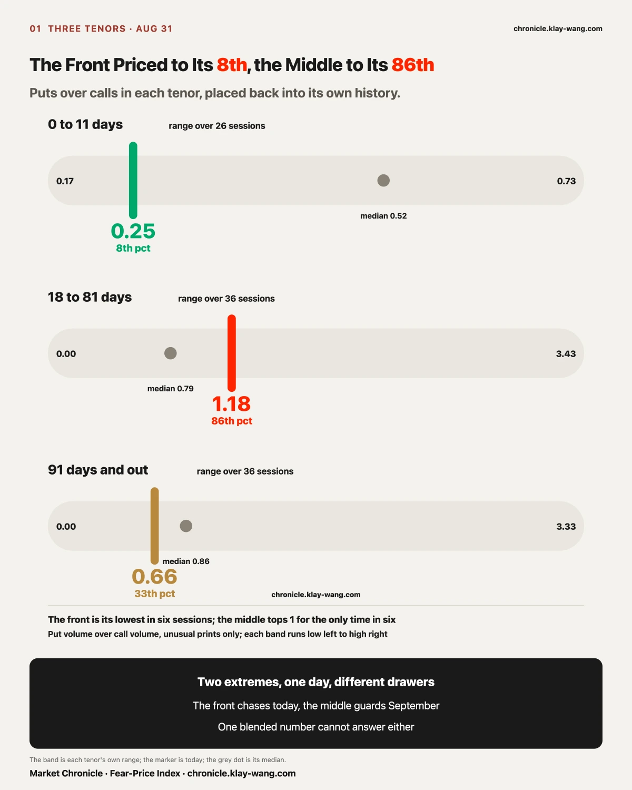
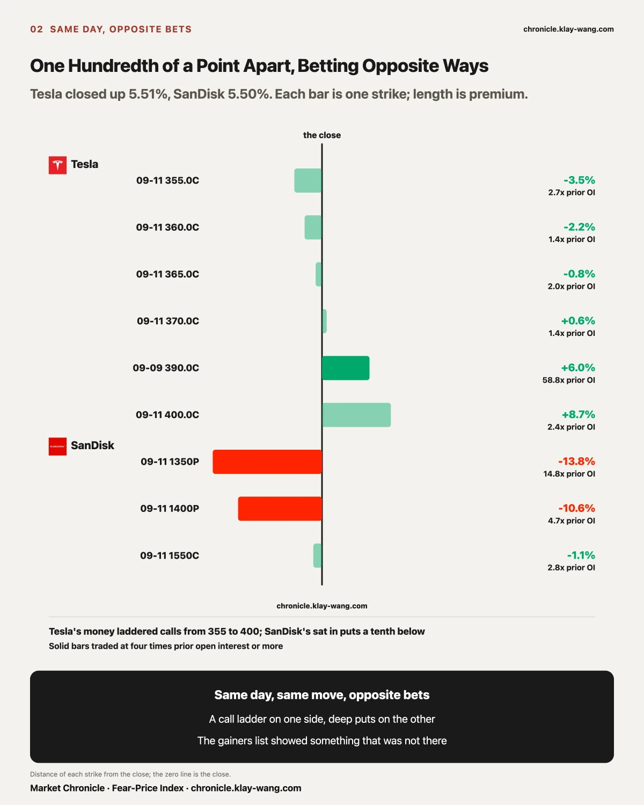
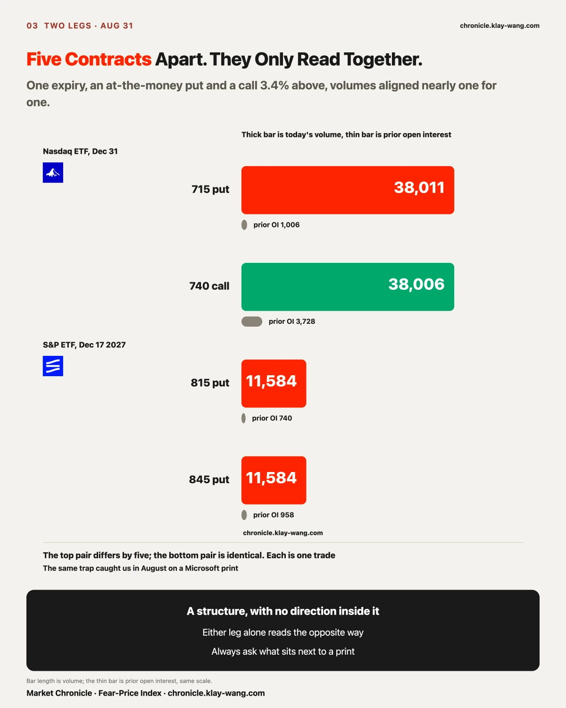
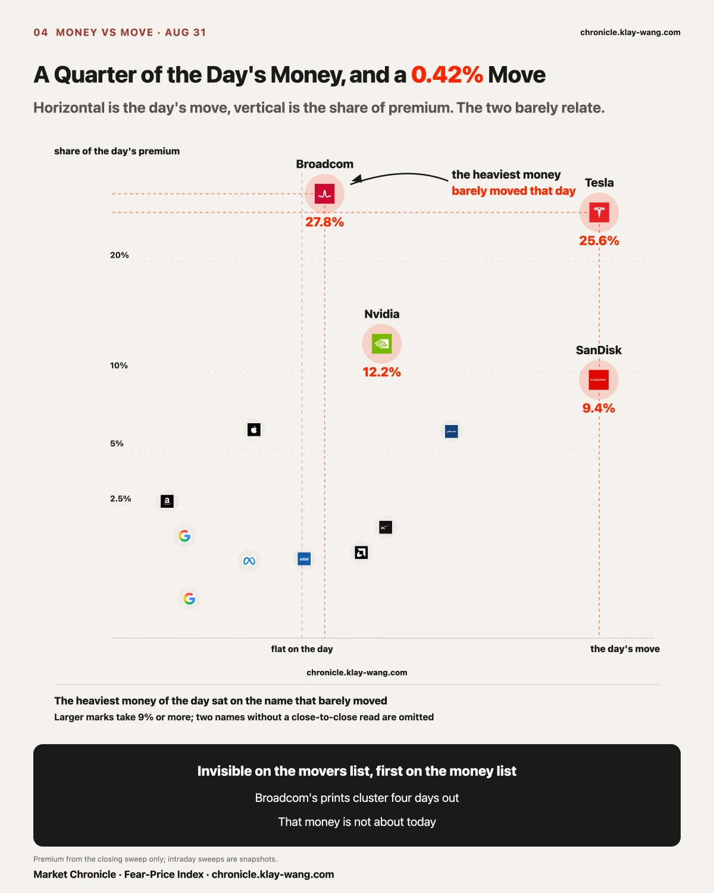
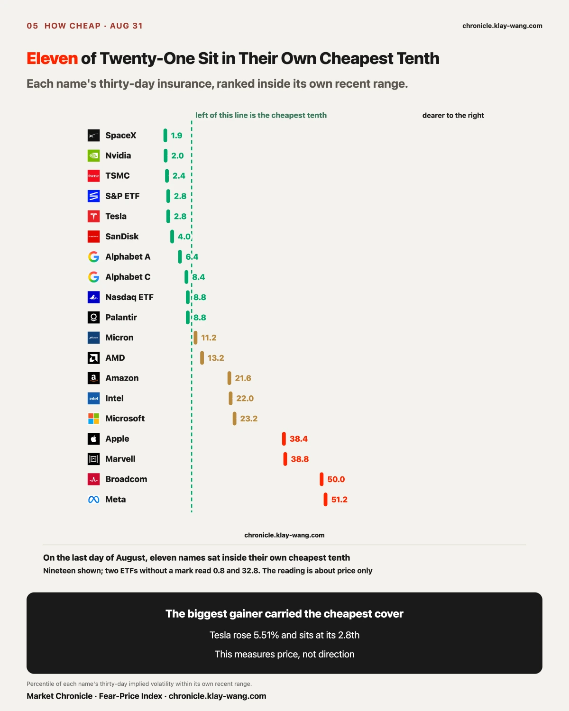
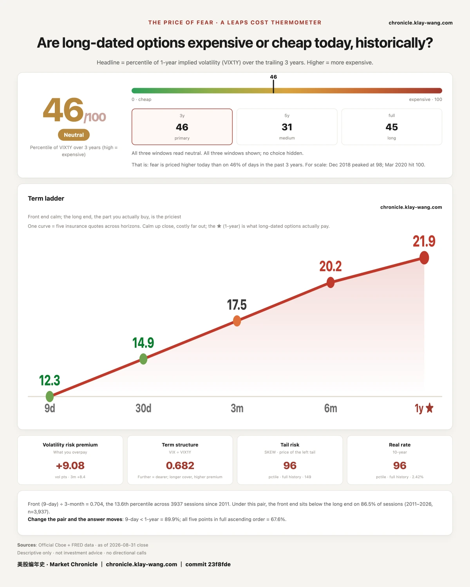

We sort each day's unusual prints into three tenors, take puts over calls in each, and rank today against that tenor's own history.
| Tenor | Today | Median | Rank |
|---|---|---|---|
| 0 to 11 days | 0.25 | 0.52 | 8th of 26 sessions |
| 18 to 81 days | 1.18 | 0.79 | 86th of 36 sessions |
| 91 days and out | 0.66 | 0.86 | 33rd of 36 sessions |
The front's 0.25 is the lowest of the past six sessions. The middle's 1.18 is the only time in six sessions it has stood above 1.
Two opposite extremes on the same day only make sense as three pools of money doing three different jobs.
The front tenor's premium sits on today's two biggest gainers and one name reporting in four days, at strikes hugging the spot price. That layer is buying the next few sessions. The middle tenor covers all of September, and September's calendar is crowded: five employment prints in the first week, payrolls on Friday, a rate decision mid-month, an expiry roll on the 18th. Today that layer's put volume passed its call volume for the first time in six sessions. Whoever bought it does not need to know which way September goes. They only need to know September has dates when answers land. The far tenor put over half its volume into index and bond funds. That layer is placing positions, and it is done asking questions.
Blend the three into one number and ask whether the market is bullish, and the question itself has already failed.
What would void this call: if tomorrow the front returns to its median while the middle stays above 1, the middle's money was never about September's calendar, this section comes back out, and we go find the real reason.
One more line for the record. Five sessions ago the far tenor printed 2.14, which we wrote up as its 96th percentile. Today it reads 0.66. That layer's tension was dismantled in five sessions, and nothing bad happened on the way down.

Tesla closed at 367.95, up 5.51%, the largest gain of the twenty-one. SanDisk closed at 1566.70, up 5.50%. On the movers list they are the same story. Split the money, and they are two.
SanDisk's rise had a mechanical cause. MSCI's quarterly review, published August 12, added SanDisk to its global index, with every change effective after the close on August 31. It traded $35.4 billion today, the most of any US stock, and the gain came late in the session. That is passive money required to buy at the close. Nobody re-priced the company.
Its options read the same way. In the closing sweep, calls took only 22% of the premium. The two heaviest prints were puts, both for September 11: the 1400 strike at about $5.7 million, struck 10.6% below the price, and the 1350 strike at $2.9 million, trading at 14.8 times its prior open interest. A mechanical bid pushed the price up, and someone laid protection ten percent below it. Those two facts fit together. The index buyer disappears after tonight. The price stays where it was pushed.
Tesla's rise came with news. A cheaper Model 3 went on sale in Hong Kong and Macau. An invitation-only Cybercab launch is set for this week in Austin. Clark County, Nevada approved its driverless taxis in Las Vegas on August 20, up to 5,000 vehicles. Its options leaned the same way: calls took 88.7% of the closing sweep's premium, laddered from 355 to 400 for September 11. Outside the ladder sat one strike on its own: the September 9 call at 390, which held 133 contracts of open interest yesterday and traded 7,817 today, 58.8 times the prior interest, struck 6.0% above the close. It built through the day, 6,404 by noon, 7,817 by the close.
One side's money is betting on a launch event that has not happened. The other side's money is guarding against a buyer that has already left. The gainers list put them in adjacent rows. Anyone reading only that list saw something today that did not exist.

In the far tenor, two legs have to be read as one print:
Nasdaq ETF Dec 31 715 put 38,011 traded 1,006 prior interest
Nasdaq ETF Dec 31 740 call 38,006 traded 3,728 prior interest
Five contracts apart, same expiry, one at the money and one 3.4% above, both dwarfing what stood before. Read the put alone and someone is bracing for a crash. Read the call alone and someone is chasing a melt-up. Together they are one structure that frames both sides, and direction lives nowhere in it.
We fell into this exact trap in August, reading a hundred-million-dollar in-the-money Microsoft call as a directional bet when it was dividend arbitrage. The rule since then: before reading any print, ask what sits next to it.
Same family, one more sighting: the S&P ETF's December 2027 puts at 815 and 845 traded identical volume, 11,584 each, both struck above the current price. We report the structure and stop there. Deep in-the-money plus long-dated usually means financing.

Today's short-tenor premium came to about $117 million. Broadcom took 27.8%, the most of any name, and closed up 0.42%. Tesla took 25.6% and closed up 5.51%.
Invisible on the movers list, first on the money list. Broadcom's 43 prints cluster on the September 4 expiry, four days out, the week it reports. Its thirty-day implied volatility ranks at its 50th percentile, one of the two dearest of the twenty-one. The money was never about today. It is about one night, four days from now, and it is paying the highest insurance rate on the board to be there.

On the last day of August, eleven of the twenty-one names carried thirty-day implied volatility inside the cheapest tenth of their own recent range. Tesla rose 5.51% today, and its thirty-day insurance ranks at its 2.8th percentile. The day's biggest gainer carried nearly the cheapest cover.
The same day, the ten-year Treasury yield rose to 4.75%, its highest since January 2025, and the thirty-year printed 5.25%.
| Aug 28 | Aug 31 | |
|---|---|---|
| Equity fear price | 14.43 | 14.92 |
| Bond fear price | 70.97 | 75.32 |
| One-year fear price | 22.16 | 21.87 |
| Fear-Price reading | 50.9 | 45.5 |
The bond ruler jumped 4.35 in one day, the third-largest move of August, lifting its three-year rank from 14.8 to 22.1. The equity ruler rose 0.49. The one-year layer fell to 21.87 and the reading fell to 45.5, both the lowest of the month. The short end is reacting. The long end is looking away.
Two headlines supplied the shape. The president said a strike on Iran is possible, with officials describing a limited plan for the Strait of Hormuz that may be approved. In the same interview he called current interest rates too high, while the market priced a September hike near even odds. An event with a date raises the price of near insurance. A policy argument without a direction raises nothing a year out. Each stuck its price tag on its own tenor today.

Fear-Price Index · 2026-08-31 · reading 45.5/100: one-year volatility VIX1Y at 21.87, the 45.5th percentile of the past three years, where high means expensive. August ran from 68.1 to 45.5, closing the month at its own low. Daily ledger and methodology at chronicle.klay-wang.com · Attribution: Fear-Price Index · Market Chronicle